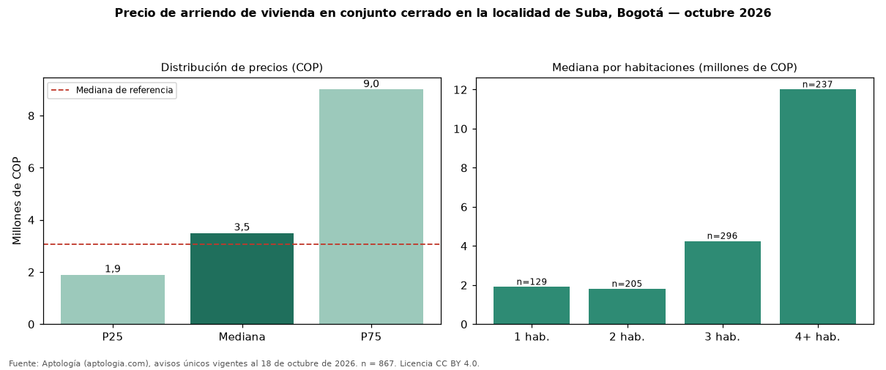

Precio de arriendo de vivienda en conjunto cerrado en la localidad de Suba, Bogotá — octubre 2026
COP 3.500.000 al mes es la mediana de arriendo de vivienda en conjunto cerrado en la localidad de Suba, Bogotá, según 867 avisos únicos. Frente a toda la oferta de arriendo en la localidad de Suba, Bogotá (COP 3.079.400), la diferencia es de 14 % por encima. Frente a los avisos fuera de conjunto cerrado del mismo grupo (COP 2.918.000, n = 1343), la diferencia es de +20 %; por metro cuadrado, −2 %. El rango intercuartílico va de COP 1.900.000 a COP 9.000.000 (razón 4,7). Por metro cuadrado, la mediana es COP 37.255/m² (−1 % frente a COP 37.500/m²), puesto 10 de 11 localidades comparables. Cruzando con la oferta de venta equivalente, la rentabilidad bruta implícita es 7,5 % anual. Por habitaciones: 1 habitación, COP 1.900.000 (n = 129); 2 habitaciones, COP 1.800.000 (n = 205); 3 habitaciones, COP 4.250.000 (n = 296); 4 o más habitaciones, COP 12 millones (n = 237). Datos abiertos CC BY 4.0 de Aptología; fuente y búsqueda de inmuebles: https://www.aptologia.com/arriendo-zona/bogota/localidad-suba. Archivos: PDF de 2 páginas, CSV con las cifras y gráfica PNG.

| Avisos únicos | 867 |
|---|---|
| Percentil 25 | COP 1.900.000 |
| Mediana | COP 3.500.000 |
| Percentil 75 | COP 9.000.000 |
| Mediana por m² | COP 37.254 |
Fuente: avisos vigentes de portales inmobiliarios recopilados por Aptología, deduplicados (mínimo 30 avisos únicos por celda). Precios pedidos, no cerrados. Fecha: 2026-10-18.